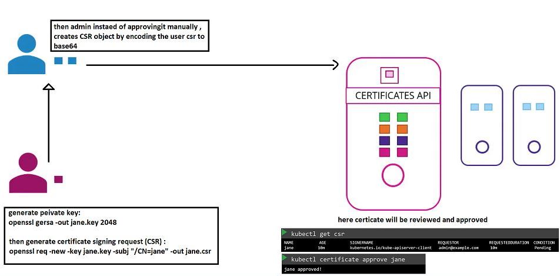
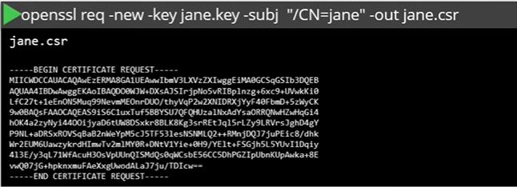
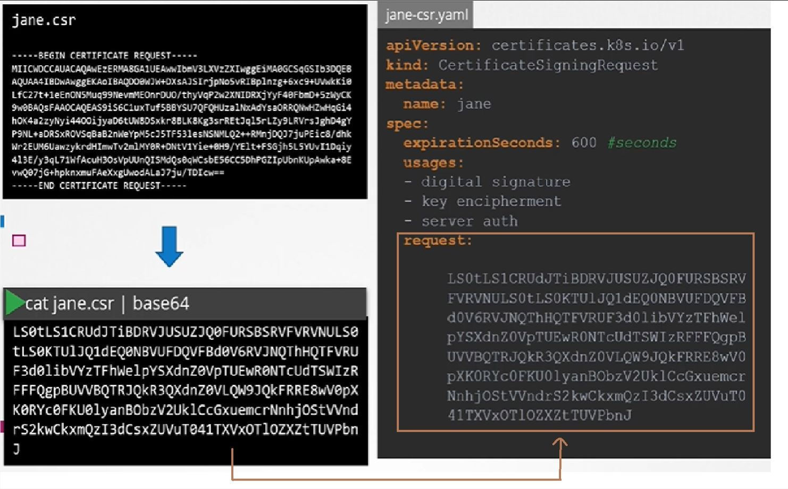
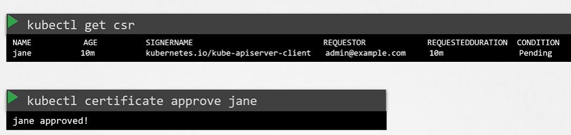
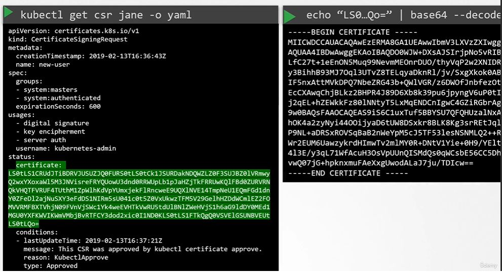

Certificate Signing Request Object

Let's say we have a new user JANE in the company who needs access to the K8 cluster.
So Jane first creates a key:
openssl genrsa -out jane.key 2048
Then she creates the Certificate Signing Request:
openssl req -new -key jane.key -subj "/CN=jane" -out jane.csr

Now an admin will take the CSR, encode it to base64, then create a CSR Object using the encoded CSR.

Then it is reviewed and approved by the admin. Kubernetes signs the certificate using Kubernetes CA key pairs and generates the certificate for the user using the following commands:

This certificate is then extracted and shared with the user.

Note: All these processes related to certificates are controlled by the Control Manager in K8.